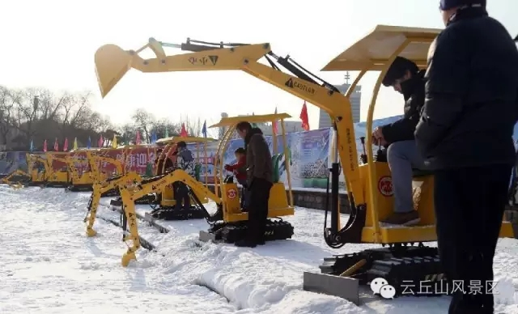

欢迎登陆云丘山景区官方网站！
 -->
-->


云丘山冰雪奇缘 • 嘉年华”2017年1月1日盛大开幕
云丘山冰雪奇缘嘉年华2017年1月1日即将盛大开幕，作为山西最大的室外景区冰雪奇缘嘉年华，在这个寒冬，让你不出家门，就可以感受北国风光，千里冰封的冰雪盛会。
东北的雪，是雪乡的梦，而云丘山的冬是让我们遥远的梦有了寄托。云丘山的冬天，仿佛就是一个童话世界。人们在心绪繁杂的时候，去穿越了苍莽延绵被银装素裹的云丘山原始森林，让渐隐渐现、时沉时浮的心情，淹没了在雪深雪浅山坳之中。造物者用它非凡的想象力，带你体验寒冬带来的快乐。在这里你可欣赏绚丽的冰雪卡通世界，领略云丘山被冰雪冻住的气势磅礴，还可尽享冬日里各种激情雪地娱乐项目、滑雪、滑冰、雪地cs、雪圈、雪地摩托车、雪地悠波球等，更可以感受云丘山独有的乡土民俗带来的冬日热情。这个冬天来云丘山纵享冬日里的激情、快乐！
冬日里多种精彩项目邀你来体验
一：看云丘山的云海雪原
1：冰瀑冰挂
去年云丘山被冻住了没来得及看的小伙伴们，今年一定不要错过。冬天的云丘山大面积的原始森林被白雪笼罩，银装素裹，雪味浓郁，形成了壮观的晋南林海雪原风情。绚烂冰瀑最能展现云丘山的冰雪风情，葫芦潭、圣母崖瀑布收起它那气势磅礴的阳刚之气，把往日的欢腾凝固在冰雪之中，定格成一幅令人遐想的天然艺术冰雕，晶莹的冰帘以及千姿百态的冰幔冰挂，好似一派璀璨耀眼的冰晶世界。
二：云丘冰雪欢乐嘉年华
1：极速雪上飞碟
这几乎是风靡世界的一个娱乐项目，适合各个年龄阶段的人来玩耍，在云丘山的空旷坡地上，旋转飞碟自上而下滑动，感受一把雪地上的激情，欢声笑语不绝于耳，阳光洒在雪地上，反射出漂亮的碎光，呆萌可爱的卡通人物、以及来往穿梭的飞碟，映衬在这样别样的冬季里，简直嗨爆了
3：雪地迷宫
生活中可能会迷失自己，而在雪地迷宫中也可能让你找不到来时的路哦。不信你就来试试吧。

5：雪地cs
不是所有会开挖掘机的人都来自蓝翔，也有可能来自云丘山。求好司机带带我~
6：DIY专属雪人
林海雪原场景再现，在皑皑白雪当中，释放冬日里的激情，撒泼打滚和小伙伴们来一场真刀真枪的雪地cs。

4：雪地挖掘机
冬日里怎么会少了雪人呢，来云丘山这里可以让孩子们释放自己的想象力，亲自动手DIY属于自己个性的专属雪人，让孩子们在成长的道路上留下美好的家庭回忆。
三：冬日里的美食温情
1：云丘山养生火锅
绿蚁新醅酒，红泥小火炉。晚来天欲雪，能饮一杯无？如果说云丘山的冰瀑是“冷美味”，那铜炉大火锅就算得上是真正的秀色可餐了。重庆最有名的是陈坤在电影中讲述的“洞子火锅”，而北方最地道的则非铜火锅莫属，在塔尔坡的窑洞里，支起热气腾腾的铜炉，铺上一层丸子一层烧肉一层土豆红薯一层豆腐白菜，红的肉绿的菜白的粉丝在锅里翻转游移，大家围坐一圈，吃一口喝一口，从嘴唇到口中，从胃里到心里都是暖暖的热热的。透过窗户，呈现出的都是最平凡最向往的幸福感。

2：云丘团圆美食宴
雪纷纷，掩重门，热一壶好酒，吃一场云丘美食，在冰冷的天气里和家人的心靠的更近。云丘美食菜系涵盖云丘水席和多种云丘特色小吃，菜品皆采用纯天然绿色蔬菜和高蛋白黑猪肉，不止美味更健康。冬日里的心情放纵也让自己和家人的胃享受一次美食盛宴。
四：冬日里的乡土民俗情
塔尔坡古村至今已有两千五百多年，曾因老子下榻而得名。这里依然保留了很多传统的晋南民俗，如花馍制作、老式的冰糖葫芦制作、豆腐制作、枣酒制作、花馍制作、皮影戏、打花鼓、剪纸等等，百十来种晋南的民俗特色在这里得以保留延续至今。尤其是云丘山的婚俗文化，丰富形象的还原再现过去的结婚场景。
Copyright 2015. YUNQIUSHAN.ALL Rights Reserved. ICP 备案号：晋ICP备12007937号 乡宁县云丘山旅游开发责任有限公司版权所有